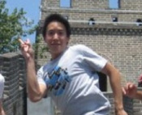
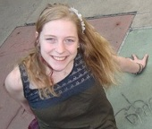
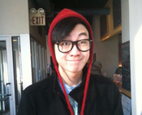

|
Amina
Amina Dreessen, a soon-to-be sophomore, is a freelance travel guide and non-practicing vegetarian. She has been on only one ASB trip so far, but it was the best one ever. She is excited to meet her group of freshmen and hopes that they love community service, car rides, and Carly Rae Jepson as much as she does, because the three are inseparable. |
|
Ben
Ben Mogni studies chemistry and Spanish and is currently applying to medical schools. He loves Northwestern and is excited to start his year with ASB!!!!!!! This will be Ben's sixth trip and he has loved them all. He thinks that ASB started off his Northwestern career in the best way possible. Also, one of his best friends went on his Pre-Wildcatwelcome trip to Goshen, Indiana. In his spare time Ben loves to watch the white sox and bears. He also officiates Intramural sports and watches Harry Potter way too often. Last summer, Ben studied abroad in Salamanca, Spain so hopefully his Spanish got a little better. Over this summer, Ben will be filling out medical school applications and volunteering at hospitals in Chicago. |
|
Carrie
Hey! I'm Carrie, an incoming sophomore studying Political Science in Weinberg. I grew up in a wicked small town in Massachusetts and I have been riding horses all my life. I'm an avid member of the Northwestern Equestrian team (yes, we have one), and expect to hear me talk about horses an absurd amount of time on this trip, a lot of my friends are still wondering if I have any other interests. You'll probably find me running around campus from clases to meetings, as I tend to give myself as little free time as possible. I can't wait to introduce you all to ASB and Northwestern! |
|
Chris
Hey guys! I'm Chris, I'm a rising sophomore majoring in Industrial Engineering and Economics. I'm from Indiana and a huge Colts fan and even more so a Peyton Manning fan. I love playing sports outside particularly basketball and football and thus fall is my favorite season. Which is one of the many reasons I love Pre-WWW trips! When I'm not out having a blast with ASB I'm usually philosophizing, playing fifa, reading or eating McDonald's. I'm ecstatic to lead a Pre-WWW trip this fall! |
 |
Danielle
Hello friends! My name is Danielle Moehrke and I'm an incoming senior in SESP, majoring in social policy.
I think want to do something with education reform post-graduation (but there's still time to decide, right? My dad doesn't think so...). Anyway, here are some of my random interests/favorites/ pastimes, shopping-list style: flannel, mud, overalls, jests, Birkenstocks, purple, illegal Bolivian tea, campfires, runningrunningrunning, bananagrams, outdoor concerts, brushing out my curls, falling off my ripstick, thunderstorms, oh, and ASB, of course! I've been on 5 ASB trips so far, and I'm super pumped to site-lead this fall. On a side note, brace yourselves, I really enjoy the ukulele and am going to learn harmonica over the summer, so there may or may not be plans for car ride sing-a-longs. |
|  |
Fred
Heyo. My name is Fred Tye and I'm an incoming senior majoring in Learning and Organizational Change. I'm originally from
Glenview, IL, a suburb just west of Evanston. ASB has hands down made my experience at Northwestern. This will be my sixth trip, which probably makes me an ASeniorcitizenB. In my free time I play a lot of tennis, cook semi-successfully, and watch unhealthy amounts of Arrested Development. I have also been known to sing to myself, but only select lyrics on repeat. Today, Call Me Maybe. Tomorrow, some Adele perhaps? I'll take requests from any PreWWW freshman. ASB is FREAKING AWESOME. |
|
Jason
Hi! I'm Jason Smith, an incoming sophomore studying Social Policy in SESP. I'm hoping to work with education reform in some manner, we'll see where that takes me. I was born and raised in Phoenix, Arizona, so I was quite happy with our relatively warm weather this past winter In my free time I love to be outside, whether it's going on a run, kayaking, hiking, or just walking around campus, and I try to explore Chicago as much as possible. At Northwestern, I'm involved in the Track Club, Stand (an anti-genocide awareness and advocacy group), and of course ASB. This will be my 3rd ASB trip, and I seriously cannot wait to site-lead. My Pre-WWW trip was my first Northwestern experience, and I had the ASBest time of my life. I wish September would just get here already so I can meet the incoming freshmen and we can have an AwesomeSB trip! |
|  |
Jess
Jess Smasal is a rising junior from the great city of St. Louis, Missouri. She's majoring in History and loves being nerdy about Jane Austen novels. Aside from that she loves being involved on campus, especially with ASB! She is very excited to be leading her second Pre-WWW trip this year, as her trip last year was one of the ASBest times of her life! When Jess isn't lovin' on ASB, she is takin' care of business as the President of Inspire Media, a group here on campus that promotes media that inspires positive social change. She does Bikram Yoga (the hot one!) and loves shenanigans on the lakefill and exploring Evanston with friends! |
|  |
Justin
Oh hi there! My name is Justin Wu, from Naperville, IL, and I am a rising junior
majoring in cultural anthropology and minoring in cross-genre creative writing. I'm involved in SHAPE (Sexual Health and Assault Peer Educators), Design For America, Mayfest (We do Dillo Day!), and last but definitely not least ASB! I love long walks on the beach, sunsets, basketball, songs embracing a certain amount of nerdiness or nostalgia, NBC comedies, cooking shows, travel shows, sitting in Norris for way too long yet somehow getting absolutely nothing done, playing ukulele, longboarding, awkwardness, fun, awesome things, the word awesome, and too many other things that I frequently forget until something reminds me of it (which results in my shouting extremely loudly and scaring everyone in my vicinity). So get ready for an AwesomeSB time! I guarantee it. |
 |
Kate
Kate is a junior who is double majoring in Learning and Organizational Change and History. She is from Garrett Park, MD, which is in the DC area, but has a fierce love for Chicago, as her dad is from the area and her mom went to NU. There is nothing she loves more than corny jokes and ASB puns, and when she is not smiling or laughing she's probably playing sports. She is a member of the women's club soccer team, an intramural sports ref, and is always down for a pick-up game of anything. On one of her previous four ASB trips, I was named "most likely to send back her children for not playing sports..." however she will love her ASB family even more than her own future children. Jokes aside, she is looking forward to leading a pre WW trip for the first time, and it being AmazingSB. |
|
Katie
Katie is a rising sophomore studying economics and political science, although she's not really sure what she wants to do with her life. She comes from the fabulous Minneapolis, Minnesota where she learned how to survive real winters. However, Katie has learned to love the Chicago culture and shopping! Besides Minnesota, Katie also enjoys state fairs, cupcakes, bad television, Ke$ha, hula hooping, hash tagging her life, and DANCE MARATHON. She's also involved with ASG, Northwestern Swim Club, and her sorority. Her favorite ASB memory was when she got to swim with manatees on her winter trip! This will be Katie’s 3rd AwesomeSB trip and she can't wait to show her ASBabies Northwestern! |
 |
Lillian
Hello! My name is Lillian Chen and I'm a rising junior from a little town right outside Ann Arbor, Michigan. I'm studying biology and global health and hope to go into medicine or research someday. When I'm not in class I do research at an awesome physiology lab in downtown Chicago, am involved in my sorority, and of course, go on ASB trips! I'm a fan of baking and chocolate, zumba, long road trips, spontaneous dance parties, playing catchphrase, and exploring the neighborhoods of Chicago. My own PreWW ASB trip was definitely one of the highlights of my freshman year so I'm incredibly excited to lead this one! This will be my fifth ASB trip and I can't wait to meet you all! |
|
Matt
Hi everybody! (in the voice of that guy from the Simpsons) My name is Matt and I'm an incoming junior majoring in mechanical engineering! People seem to like me because I'm polite, and I'm rarely late. I really enjoy a good pair of slacks. I love playing Frisbee, soccer, and tennis. I am heavily involved with ASB and NUSTARS (NU Space Technology and Rocketry Society), and love hanging in the ASB office with my homies Fred Tye and Danielle Moehrke. In my free time I watch way too much TV, including How I met Your Mother, Game of Thrones, Weeds, Futurama, LOST and many more. I have a weird knack for remembering quotes from TV shows and movies, and I can probably ruin any movie that you hold dear by saying each line precisely three seconds before it comes up. I absolutely LOVE ASB and I am really excited to be site leading another Pre-WWW trip (I site-led one last year to South Bend, IN)! This will be my fifth ASB trip, and the third that I am site leading. Can't wait to meet errbody!!!!!!!!!!!!!!! |
 |
Michelle F.
Hello! Michelle Ferber is a rising sophomore majoring in Industrial Engineering with a possible minor in international studies. Originally from Great Neck, New York, she has come to love the friendly midwest! When she's not busy wondering around tech, you can find her at the gym or somewhere outside studying! Michelle is also involved in her sorority Delta Zeta, the exec board of her residential college, Hobart House, and tuturs evanston high schoolers! Michelle has been on two previous ASB trips, and both were AwesomeSB and she cant wait to lead a pre-wildcat trip! Michelle also LOVES to tell stories, and anything you can think of she can thing of she will be able to tell you a random tidbit about (so pumped for a long car ride)! |
 |
Michelle K.
Michelle Ki is a rising Junior studying Social Policy in SESP who can't believe that half her time at college has already passed. She loveloveloves food, especially of the yummy variety. She still secretly wishes that people would break out into song and dance on Sheridan road and that her life would be a fantastic musical. When not raving about her love for ASB or SESP, Michelle is usually hanging out with her friends in Norris or at the lake, planning escapades to Chicago, traveling the world or drowning in wanderlust, and eating... Did she already mention she likes to eat? (: Michelle's been on five ASB trips and this will be her sixth trip. Her favorite trips are Pre-WWW trips, though so she's super excited to be a part of your first ASB and college experience! Yay! (: |
|
Rebecca
Rebecca Schieber is about to begin her sophomore year at Northwestern. She is majoring in political science. Rebecca is originally from Orland Park, IL. On campus, Rebecca is a member of the Women's Ultimate Frisbee Team, a senator for Associated Student Government, a member for a small, but passionate political group (I'm sure you will be able to guess upon meeting me), a violinist in the non-majors orchestra, and, of course, ASB! Rebecca's favorite things include America, Chipotle, awesome people, Orange (not the fruit, the color), suits, The White Sox, baseball, Disney World, food, Hershey's Cookies 'n' Cream Chocolate Bars (bonus points if you buy her some!), not hugging, cherry coke, and winning. She is so pumped to meet her AttractiveSBabies and can't wait to introduce you all to this awesome school! |
 |
Taiyo
Taiyo is a rising senior from Seattle, Washington studying Computer Engineering. He thinks it would be the perfect major if there wasn't so much numbers involved. When he's not recreating scenes from The Lion King or speaking in the third person, you might find Taiyo watering his bamboo plant or watching episodes of Portlandia. Other likes include Thanksgiving leftovers and the Skype sound effects. Taiyo is excited to get to work at our volunteer site, but not as excited as he is to meet you cool 'cats! |
|
Tom
Tom Meyer is a 20-year-old rising Medill junior from Western Springs, IL. Tom is majoring in Journalism and Political Science and pursuing a certificate in marketing. He's been an editor and a writer for The Daily Northwestern, is involved with Dance Marathon as a committee member, is active in his fraternity and listens to Call Me Maybe on repeat. Tom works at the Norris Box Office and as a research assistant for a Medill professor. This summer, he's interning in marketing at a home security company and working as a research assistant in the Institute of Policy Research at NU. Apparently, he just loves assisting research. This is Tom's second ASB trip and he describes his first trip as a life changing combination of the greatest people in the world, service, and Adele's album "21." Tom is an avid fan of NU and Chicago sports, and will probably demand that everyone go to all the football games in the fall. #GoCats |
|
Wilson
Wilson Shirley is a rising sophomore from the proud Commonwealth of Kentucky who has yet to declare a major. Thus far his college experience has been dominated by theater, political groups and the Evanston municipal government. Though each of those activities is rewarding in its own unique way, he could not be more thrilled by the return to his Northwestern roots that ASB Pre-Wildcat Welcome Week will provide him with. He loves typewriters, the idea of jogging, and The Lord of the Rings. |
|
Zoe
Hey Team! I am a rising ASeniorB majoring in Social Policy in SESP. I spent the first half of junior year living in India, but I spent my freshman and sophomore year living at the football stadium and basketball arena, so I am excited to share my love for both NU and India with you! I love roadtrips, I love people, and I love all kinds of Indian dance music. What a great combination for a 6 hour car ride with me! But really. It's happening. This will be my fifth ASB Trip and I know this one will be my favorite, but my other favorite trip was building houses in New Orleans two years ago over spring break. Welcome to the best week of your life!
|